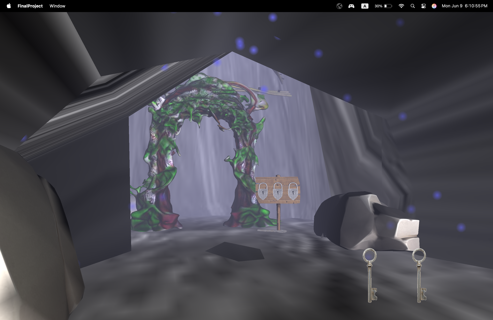

So, for this project, I focused on creating an ambient cave scene with a heavier focus on varying shaders since I really wanted to expand my capabilities on that end.
You spawn at the edge of the cave without much direction. There's a dense fog preventing you from looking too far; this is done by passing a collection of uniforms to the fragment shader (fogMinDist, fogMaxDist, fogColor) and then calculating the distance a computed fragment is from the camera (distance(EPos, vec3(0))) then normalizing that distance between fogMinDist and fogMaxDist (clamping to 0 + 1). Then, we mix the final computed color (texture, blinnPhong shader, etc) with the fog value by that computed normalized distance value. Apart from the fog, there are a lot of different objects around; most of these are randomly generated around a given point. The mushrooms spawn around five fixed locations somewhat circularly, and the roots spawn in a square around the ceiling. Sometimes these locations are a bit odd, but most of the time it looks pretty good. Also, the walls are all one giant collision object.
If you walk a bit forward, you can see a skeleton hanging out next to a bunch of crates. What an unfortunate guy. If you don't escape this cave, that will be you soon. Better watch out. Also, the crate in front of him is selectable. When you hover over it, it gets bright. This is done in the fragment shader by calculating the direction of the view vector vs. the fragment's normal. In this case, I just wanted the entire box to be lit, so every fragment will get a color if a "highlight" boolean is set. The CPU decides whether or not to set the highlight boolean by checking if the player is within a given distance to the box every frame, and if it is, it checks if the player's view direction roughly aligns with the box's location. Also, the big crates behind the skeleton all have a collision box. The skeleton does not though, nor does the small crate.
If you continue on your way exploring the cave, you will see this collection of odd spikes in the corner. A suspicious key is floating behind all of the spikes. You should probably pick up that key. If you touch any of these spikes, you will die, and respawn wherever you started. You won't lose your keys or anything so it's not a super big deal but I wanted to make sure that there were some sort of stakes when you run through the spikes to reach the key in the first place. Also, the key has a similar highlight when you hover over it to the crate, but this one only sets the color if the view dot normal vector value is below a cutoff. That gives the effect of highlighting the edges that are not directly facing the player (by effectively isolating fragments that are almost perpindicular to the player's view direction)
After picking up the key, you might notice a small gold coin on the ground in one of the mushroom piles. This coin also spawns randomly between one of the five mushroom locations. It doesn't have the selectable highlight, because for some reason I couldn't get it to highlight like the keys did, but it can still be picked up. It has a skeleton face on it, which kind of suggests that you should put it inside the crate in front of the skeleton.
Also, any collectible that you pick up will render on the UI. This is done by passing in image textures to the FBO shader, which then renders the images on top of the scene view if the position of the UI matches up. It's pretty cool in my opinion.
Upon putting the coin in the crate, the skeleton starts doing a painfully long dance that eventually stops as he vanishes from existence. In his place is a key that you can pick up.

After grabbing the key you can head over to the waterfall with a particle system and scrolling texture. This is accomplished by just passing the time since the program started into a separate shader thats exclusive purpose is to render a scrolling texture. If you walk under the waterfall, you can discover an entire new room.
This final room has a portal frame and a very ominous sign with three locks on it.

If you walk closer to the locks, you will find that they are all selectable. Depending on which one you click, it will get a key placed into it. The third key is right at the bottom of the sign because I wasn't very creative. By placing it there, I thought I would make it more clear that the keys are supposed to go in the locks, but in hindsight... that is literally what locks are for, so it really was not necessary.


The vines above here are also randomly generated, choosing a random height above the previous vine as well as a random rotation. It creates a pretty nice effect.

Anyway, after you put in the three keys, the portal opens with another scrolling texture, this one moving diagonally. As you walk closer to the portal, the screen begins to get more and more purple. This was achieved by passing in the distance to the portal every frame to the FBO shader, and if all three keys have been collected, the FBO fragment shader does a mix between the rendered color on screen and a purple color. This mix is applied after calculating UI values, so it would get change the color of the on screen keys / coin, but at this point all of the collectibles have been used so it doesn't really matter anyway.

After you walk through the portal, it teleports you above the entire cave and turns off fog so that you can see how absolutely abysmal the outside of this cave looks. As you can see half of the randomly generated roots don't make it into the cave, and the skeleton is now hovering in the sky. I thought it was kind of funny though, so I kept it.

I worked for awhile on making movement pretty smooth in this game, and so
the player's active movement is kept track of with a collection of
velocity values (one for each dimension). Each render frame, before any of
the objects are drawn, movement for the frame gets calculated in
tickMovement(), which updates the velocity accordingly. If nothing is
currently pressed, the velocity slows down until reaching zero. There is
also gravity and jumping enabled, which is used to reach the key behind
the spikes. Finally, pressing control causes the player character to
sprint.
tickMovement() also detects collisions by passing in the current and
desired position (the one computed after adding current velocity) to a
helper function, which iterates over all collision objects and calls
willCollide(current, desired) on each object. There is a CollisionObject
interface that I created that all CollisionObjects implement, which just
made it a little easier to organize objects (The cave wall is a
CollisionPolygon, which is a collection of CollisionPlanes, but the
objects in the scene are all CollisionCylinders)
Website for searching for free models:
Sketchfab
Alternative website (sometimes had better models, but most of the time did
not):
Turbosquid
Most of the models you download from the above websites will come with
textures, but if not, I just searched google images to find a texture.
A lot of those models are not available in OBJ format, but
most had GLB, so I converted them here:
GLB to OBJ
I also had a problem sometimes with rendering .png textures. I used this
website to convert: PNG to JPG
I also used Blender to create some
of my own models. However, the only object that ended up getting used in
the final version of the project (of the ones I created) was the cave
wall.